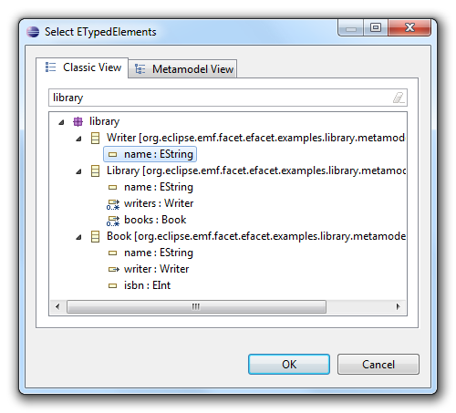
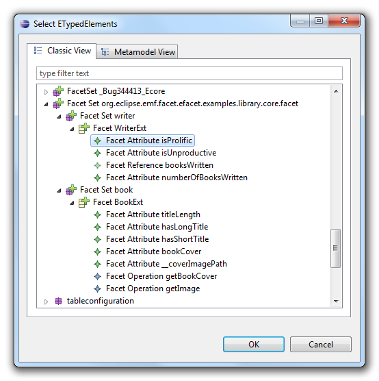
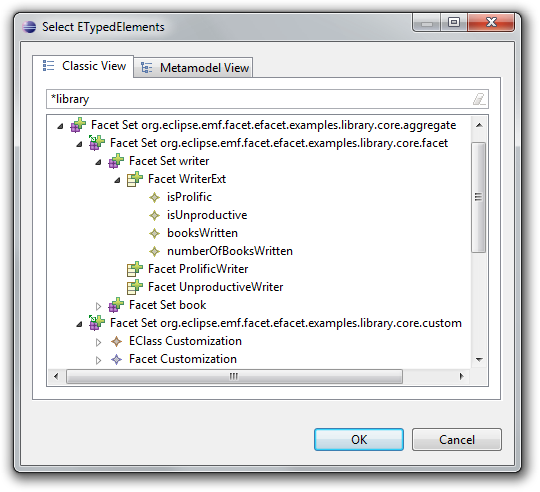
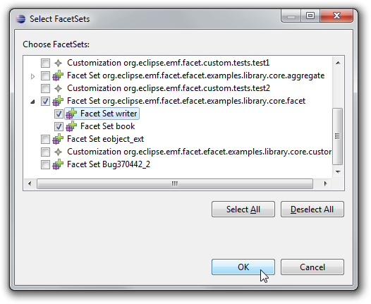
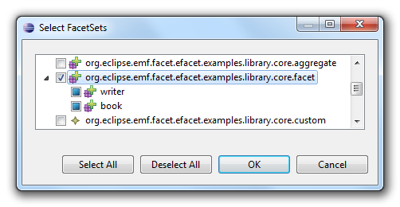

The EMF Facet query mechanism is generic: new query types can be added through extension point org.eclipse.papyrus.emf.facet.efacet.core.queryImplementationRegistration by implementing IQueryImplementationFactory. For example:
<extension point="org.eclipse.papyrus.emf.facet.efacet.core.queryImplementationRegistration"> <queryImplementationRegistration class="com.example.MyQueryImplementationFactory"/> </extension>
You can add new result displayers by implementing IETypedElementResultDisplayer. This can be useful if you want to add a new type of visualization: table, tree, html page, diagram, ...
You will need to register your result displayer implementation with extension point org.eclipse.papyrus.emf.facet.efacet.ui.eTypedElementResultDisplay. For example:
<extension point="org.eclipse.papyrus.emf.facet.efacet.ui.eTypedElementResultDisplay"> <displayer class="com.example.MyDisplayer"/> </extension>
note: the dialog is internal, so there is no API guarantee
EMF Facet provides an ETypedElement selection dialog:

To open this dialog to let the user select ETypedElements, use IETypedElementSelectionDialogFactory#openETypedElementSelectionDialog from the plug-in org.eclipse.papyrus.emf.facet.efacet.ui. For example:
IDialogCallbackWithPreCommit<List<ETypedElement>, Object, Object> callback = new
IDialogCallbackWithPreCommit<List<ETypedElement>, Object, Object>() {
public void committed(List<ETypedElement> result, Object precommitResult) {
// do something with the result
}
public Object openPrecommitDialog(List<ETypedElement> result, IDialogCallback<Object> precommitCallback) {
return null
}
};
final IETypedElementSelectionDialog<Object> dialog = IETypedElementSelectionDialogFactory.DEFAULT
.openETypedElementSelectionDialog(eTypedElements, Integer.MAX_VALUE, false,
callback, getShell(), getCustomizationManager(), getKnownFacetSets());
You can also add a pre-commit dialog, i.e. a dialog that will open after the user clicked OK in the ETypedElement selection dialog, but before the dialog closes. This "pre-commit dialog" can be used as a confirmation dialog. You must return you pre-commit dialog in the callback's openPrecommitDialog. For example:
IDialogCallbackWithPreCommit<List<ETypedElement>, Boolean, MyPreCommitDialog> callback =
new IDialogCallbackWithPreCommit<List<ETypedElement>, Boolean, MyPreCommitDialog>() {
public void committed(List<ETypedElement> result, Boolean precommitResult) {
// do something with the result
}
public MyPreCommitDialog openPrecommitDialog(List<ETypedElement> result, IDialogCallback<Boolean> precommitCallback) {
return new MyPreCommitDialog(result, precommitCallback);
}
};
If the user confirms their choice in your pre-commit dialog, then you must call IDialogCallback#committed on the callback that you received in IDialogCallbackWithPreCommit#openPrecommitDialog.
This screenshot shows how hierarchical FacetSets are represented: the org.eclipse.papyrus.emf.facet.efacet.examples.library.core.facet FacetSet contains two FacetSets: writer and book:

This dialog uses the method org.eclipse.papyrus.emf.facet.efacet.metamodel.v0_2_0.efacet.FacetSet.getFacetSets() to get the "subFacetSets". This method can be overridden to tune the behavior of the facet set containment. The aggregate's implementation is based on the override of FacetSet.getFacetSets().
This screenshot shows how aggregates are represented in this dialog: the org.eclipse.papyrus.emf.facet.efacet.examples.library.core.aggregate FacetSet is an Aggregate that aggregates org.eclipse.papyrus.emf.facet.efacet.examples.library.core.facet and org.eclipse.papyrus.emf.facet.efacet.examples.library.core.custom:

note: the dialog is internal, so there is no API guarantee
EMF Facet provides a FacetSet selection dialog:

To open this dialog to let the user select FacetSets, use IFacetSetSelectionDialogFactoryopenFacetSetSelectionDialog from the plug-in org.eclipse.papyrus.emf.facet.efacet.ui. For example:
final Collection<FacetSet> registeredFacetSets = IFacetSetCatalogManagerFactory.DEFAULT
.getOrCreateFacetSetCatalogManager(new ResourceSetImpl())
.getRegisteredFacetSets();
IDialogCallback<List<FacetSet>> callback = new IDialogCallback<List<FacetSet>>() {
public void committed(List<FacetSet> selection) {
// do something with the result
}
};
IFacetSetSelectionDialogFactory.DEFAULT.openFacetSetSelectionDialog(registeredFacetSets, 1, false, callback, getShell());
You can also add a pre-commit dialog, i.e. a dialog that will open after the user clicked OK in the ETypedElement selection dialog, but before the dialog closes. This "pre-commit dialog" can be used as a confirmation dialog. You must return your pre-commit dialog in the callback's openPrecommitDialog. For example:
final IDialogCallbackWithPreCommit<List<FacetSet>, Boolean, MyPrecommitDialog> dialogCallbackWithPreCommit =
new IDialogCallbackWithPreCommit<List<FacetSet>, Boolean, MyPrecommitDialog>() {
public void committed(List<FacetSet> result, Boolean precommitResult) {
// do something with the result
}
public MyPrecommitDialog openPrecommitDialog(List<FacetSet> result, IDialogCallback<Boolean> precommitCallback) {
return new MyPrecommitDialog(result, precommitCallback);
}
};
Collection<FacetSet> registeredFacetSets = IFacetSetCatalogManagerFactory.DEFAULT
.getOrCreateFacetSetCatalogManager(new ResourceSetImpl())
.getRegisteredFacetSets();
IFacetSetSelectionDialogFactory.DEFAULT.openFacetSetSelectionDialog(registeredFacetSets, 1, false, callback, getShell());
If the user confirms their choice in your pre-commit dialog, then you must call IDialogCallback#committed on the callback that you received in IDialogCallbackWithPreCommit#openPrecommitDialog.
This screenshot shows how hierarchical FacetSets are represented: the org.eclipse.papyrus.emf.facet.efacet.examples.library.core.facet FacetSet contains two FacetSets: writer and book:

This dialog uses the method org.eclipse.papyrus.emf.facet.efacet.metamodel.v0_2_0.efacet.FacetSet.getFacetSets() to get the "subFacetSets". This method can be overridden to tune the behavior of the facet set containment. The aggregate's implementation is based on the override of FacetSet.getFacetSets().
Copyright © 2012 Mia-Software. All rights reserved. This program and the accompanying materials are made available under the terms of the Eclipse Public License 2.0 which accompanies this distribution, and is available at https://www.eclipse.org/legal/epl-2.0/. Contributors: Nicolas Bros (Mia-Software)